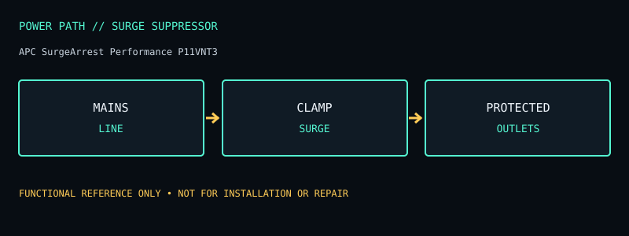

[ SURGE SUPPRESSOR // IDENTIFIED MODEL ]
APC SurgeArrest Performance P11VNT3
Eleven-outlet 120 V surge suppressor with manufacturer-listed 3020 J rating; no backup battery. This record documents the named model only; check the unit nameplate and its matching manufacturer documentation before service or installation.

ARCHIVAL IDENTIFICATION: Preserve the complete SKU, suffix, region, date code, manual revision, installed battery part number and observed condition. Similar model names do not prove identical hardware.
Model specifications & service record
| Subcategory | Surge protection devices |
|---|---|
| Topology / function | Mains-connected surge protective device (not a UPS or line-regenerating conditioner); it has no inverter or battery backup. |
| VA and W ratings / outlets | 120 V North American power strip with 11 NEMA 5-15R receptacles; manufacturer-listed surge energy rating is 3020 joules. Includes telephone/coaxial-line protection on this model family; verify ports on the exact revision. |
| Battery / replacement | No battery; not applicable. |
| Runtime / operating conditions | No battery runtime or outage ride-through claim: output stops when mains power is lost. |
| Interfaces / monitoring | Status indicator(s) for protection/grounding, two USB charging ports, and switched outlet control per manual; USB charging is not UPS shutdown signaling and there is no metered energy reporting. |
| Electrical safety / limits | A surge suppressor does not correct sustained undervoltage or keep equipment running. Protection depends on correctly wired/grounded receptacle and intact status indication. Coax/telephone paths need proper incoming and outgoing connections; protection is not a substitute for service-provider grounding or lightning safety. |
| Revision / variant identification | P11VNT3 has revisions and regional variants; distinguish it from P11VT3, P11U2, and products with different USB/communications features. Confirm exact outlet count, joule rating and line-protection connectors on the nameplate/manual. |
Service & archival notes
- Record nameplate and battery labels before removal; separate measured behavior from manufacturer ratings and record load, input conditions, temperature and test date.
- Do not open an energized unit. Mains equipment and batteries can retain hazardous energy; have battery installation, disposal, and electrical work performed according to the product manual and local rules.
- For archival units, document missing covers, damaged cords, alarms, failed indicators, battery age/swelling/leakage, and any substituted part. Do not return a damaged unit to service.
- Product and manual links below are the primary reference for the named regional model. Verify exact revisions rather than transferring ratings from a similarly named SKU.
Manufacturer sources
- Manufacturer product specifications — APC SurgeArrest Performance P11VNT3Model-specific ratings, regional identity, configuration and available documentation.
- Manufacturer manual / product documentation and runtime referenceUse the manual matching the complete model code and revision. Runtime statements above describe manufacturer chart/conditions where available, not a guaranteed result for an aged unit.